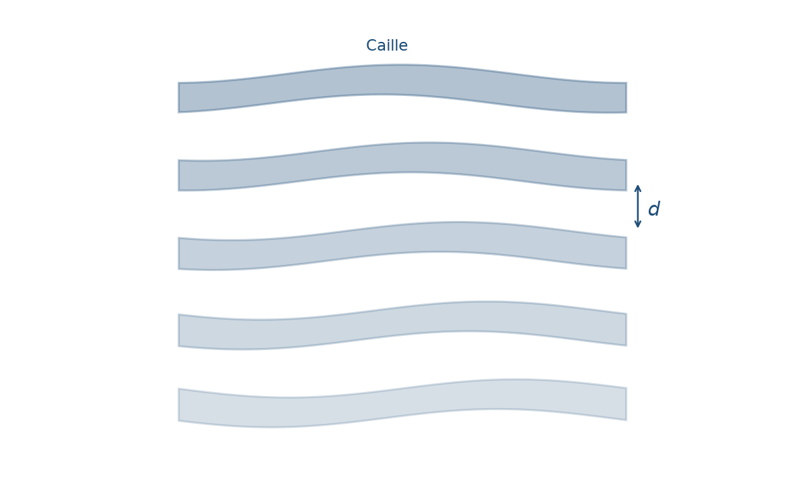
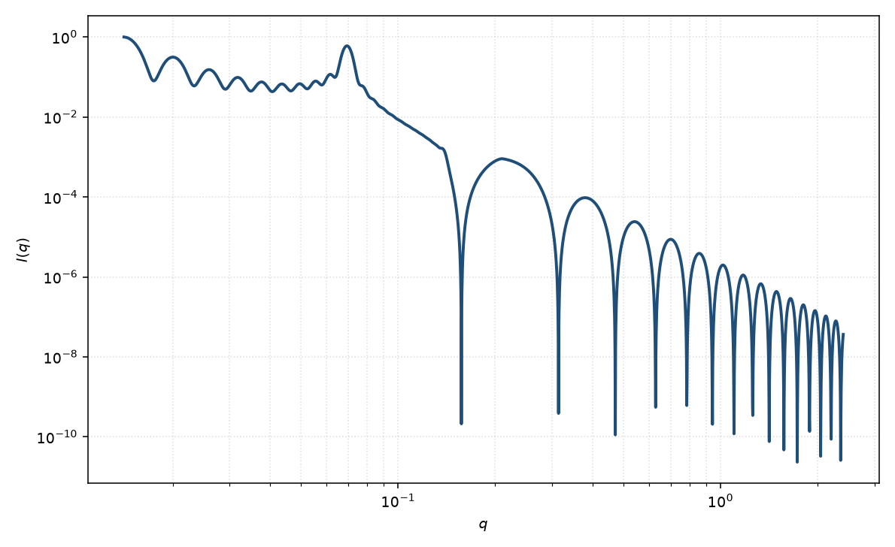

Caille 层状堆叠
lamellar stack Caille
适用场景
多层膜沿法向以平均间距 $d$ 堆叠，且层间无序主要来自热弯曲起伏（smectic A / 溶致层状）时，用 Caille 结构因子乘以单层厚度形式因子。典型对象：溶致层状相、多层脂质体、柔性表面活性剂膜的粉末谱。
$I(q)$ 在 $q_n=2\pi n/d$ 出现布拉格峰，峰有幂律尾而不是高斯；高阶峰按 $n^2\eta$ 迅速变宽。刚性层、间距无关联涨落更接近准晶堆叠。横向有限的 tactoid 用堆叠圆盘。
物理图像
Caille（1972）由层状弹性（弯曲模量 $K$ 与压缩模量 $\bar{B}$）给出位移的对数关联：均方位移随层序对数发散（Landau–Peierls）。Nallet 把有限畴 $N$ 的离散求和写成 Debye–Waller 因子 $\propto(\pi n)^{-\eta q^2 d^2/4\pi^2}$。粉末平均再乘 $2\pi/(q^2 d)$。
单层仍用矩形厚度剖面。峰位定 $d$，峰形与漫散射定 $\eta$ 与 $N$。形式因子在节点处压低整级峰，可与起伏加宽混淆。
示意图


核心公式
出发点
有限畴内 $N$ 层以平均间距 $d$ 堆叠。第 $n$ 层中心 $z_n=nd+u_n$，其中 $u_n$ 是法向位移。谐波层状弹性（压缩模量 $\bar{B}$、弯曲模量 $K$）给出 Caille 参数
$$\eta=\frac{q_0^2 k_{\mathrm{B}}T}{8\pi\sqrt{K\bar{B}}},\qquad q_0=\frac{2\pi}{d}.$$Landau–Peierls：均方位移随层序对数发散。相隔 $n$ 层的位移关联器（$\gamma_{\mathrm{E}}$ 为 Euler 常数）
$$\bigl\langle[u_n-u_0]^2\bigr\rangle=\frac{\eta d^2}{2\pi^2}\bigl[\gamma_{\mathrm{E}}+\ln(\pi n)\bigr].$$单层厚度形式因子 $P_{\mathrm{t}}$ 与层状页相同；粉末 Lorentz $2\pi/q^2$ 同样来自无限片的取向平均。层间干涉全部进入 $S(q)$。
推导
谐波近似下位移为高斯，特征函数 $\langle\mathrm{e}^{iq(u_n-u_0)}\rangle=\exp(-q^2\langle[u_n-u_0]^2\rangle/2)$。代入关联器：
$$\exp\Bigl(-\frac{q^2}{2}\bigl\langle[u_n-u_0]^2\bigr\rangle\Bigr)=\exp\!\left(-\frac{\eta q^2 d^2}{4\pi^2}\bigl[\gamma_{\mathrm{E}}+\ln(\pi n)\bigr]\right)=(\pi n)^{-\eta q^2 d^2/4\pi^2}\mathrm{e}^{-\eta q^2 d^2\gamma_{\mathrm{E}}/4\pi^2}.$$结构因子是层对之和 $S(q)=\sum_{m,n=0}^{N-1}\mathrm{e}^{iq(m-n)d}\langle\mathrm{e}^{iq(u_m-u_n)}\rangle$。令 $k=|m-n|$，有 $N-k$ 对相隔 $k$ 层的项，得到 Nallet 有限 $N$ 求和
$$S(q)=N+2\sum_{n=1}^{N-1}(N-n)\cos(nqd)\,\exp\!\left(-\frac{\eta q^2 d^2}{4\pi^2}\bigl[\gamma_{\mathrm{E}}+\ln(\pi n)\bigr]\right).$$粉末强度把 Lorentz、单层形式因子与层间 $S$ 相乘（绝对前置因子收进 $\mathrm{scale}$）
$$I(q)=\frac{2\pi}{d q^2}\,P_{\mathrm{t}}(q)\,S(q)+B,\qquad P_{\mathrm{t}}(q)=\left[\mathrm{sinc}\!\left(\frac{qt}{2}\right)\right]^2.$$$\eta\to 0$ 时指数因子 $\to 1$，$S$ 回到有限晶格的 Laue 函数 $N+2\sum(N-n)\cos(nqd)=\sin^2(Nqd/2)/\sin^2(qd/2)$。
低 $q$ 与渐近
布拉格位置 $q_n=2\pi n/d$。第 $n$ 级的有效 Caille 指数 $\eta_n=n^2\eta$（因为 $q_n^2\propto n^2$）。无限体系在峰附近 $S\sim|q-q_n|^{\eta_n-2}$；再乘 Lorentz $1/q^2$ 后，粉末峰带幂律尾而不是高斯。有限 $N$ 把发散截断为有限峰高，峰宽含相干长度 $\sim Nd$。
高阶峰因 $\eta_n\propto n^2$ 迅速变宽、变弱。$q\to 0$ 且 $\eta=0$ 时 $S(0)=N^2$；热起伏使低 $q$ 不再完全相干。高 $q$ 的包络仍由 $P_{\mathrm{t}}$ 决定：第一零点约 $q=2\pi/t$，其后振荡 Porod $\sim q^{-4}$。形式因子节点可以压低整级布拉格峰，并不等于 $\eta$ 极大。
参数表
| 参数 | 符号 | 含义 | 单位 | 典型范围 |
|---|---|---|---|---|
| 层间距 | $d$ | 相邻片层中心距 | Å | 略大于厚度；稀释可至数百 Å |
| 畴内层数 | $N$ | 相干堆叠的片数 | — | 5–100 |
| Caille 参数 | $\eta$ | 热起伏强度 | 无量纲 | $0.01$–$0.4$ |
| 片层厚度 | $t$ | 单层矩形剖面厚度 | Å | 10–80 Å |
| 极角 / 方位角 | $\theta,\phi$ | 层法向（二维） | 度 | 剪切可取向 |
| 标度 / 本底 | $\mathrm{scale}$, $B$ | 前置因子与常数本底 | 与强度单位一致 | 实验相关 |
拟合注意
片层取向：粉末谱把层状峰抹成较宽的环；二维弧向宽度才约束取向分布。不要用 $\eta$ 去吸收未取向样品的几何平均。
畴大小 $N$ 与 $\eta$ 都加宽峰：$N$ 近高斯型相干长度，$\eta$ 给幂律尾。高阶峰是否存在是分开二者的关键。Caille $\eta$ 与仪器分辨率强相关： smearing 同样加宽峰、填尾，低分辨数据上 $\eta$ 往往被高估；须把分辨率函数卷积进去，或用高分辨限制 $\eta$ 下限。
多分散：厚度分布调制峰强度（经 $P_{\mathrm{t}}$），间距分布则更接近准晶，与 $\eta$ 不同向。磁性：磁通道的 $S(q)$ 仍由同一套 $d,\eta,N$ 描述，但 $P_{\mathrm{t}}$ 用磁厚度与磁 SLD。
可辨识性：只有一级峰时，$d$ 可定，$\eta$、$N$ 与分辨率几乎完全共线。要报 $\eta$，需要高分辨、多级峰或独立的弹性常数估计。
相近模型
- 层状 — 无层间关联，$S=1$。
- 头基–尾链 Caille 堆叠 — 同一 $S(q)$，更细的双层剖面。
- 准晶层状堆叠 — 间距高斯无序，不是弯曲起伏。
- 堆叠圆盘 — 横向有限，一维准晶式干涉。
参考文献
- Caillé, A. Remarques sur la diffusion des rayons X dans les smectiques. C. R. Acad. Sci. Paris, Sér. B 1972, 274, 891–893.
- Nallet, F.; Laversanne, R.; Roux, D. Modelling X-ray or neutron scattering spectra of lyotropic lamellar phases: interplay between form and structure factors. J. Phys. II France 1993, 3, 487–502. DOI: 10.1051/jp2:1993146
- Zhang, R.; Tristram-Nagle, S.; Sun, W.; Headrick, R. L.; Irving, T. C.; Suter, R. M.; Nagle, J. F. Small-angle x-ray scattering from lipid bilayers is well described by modified Caillé theory but not by paracrystalline theory. Biophys. J. 1996, 70, 349–357. DOI: 10.1016/S0006-3495(96)79576-0